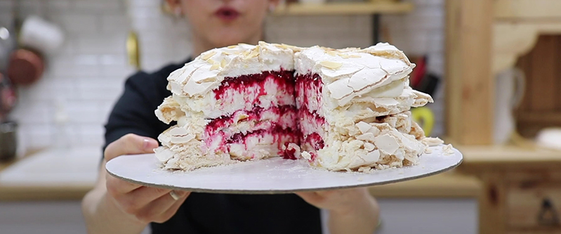

приготовление:
-
МЕРЕНГА: взбить вместе 200 гр. белка (приблизитльно 6 яиц), 300 гр. сахарной пудры, ванильный экстракт, 40 гр. кукурузного крахмала и 1-2 ч.л. лимонного сока. Взбивать долго, минут 10-15, чтобы пена была очень плотной и хорошо держала форму.
-
Поставить духовку греться на 150 градусов. Нарисовать 3 круга диаметром 18см на бумаге для выпечки. Перевернуть бумагу, смазать сливочным маслом, по нарисованным границам сформировать 3 коржа. Посыпать сверху чуть-чуть миндальными лепестками. Выпекать можно на двух уровнях, но тогда с режимом конвекция. На это уйдет 35 минут. Сверху должна появиться сухая хрустящая корочка, а внутри быть нежными. Достать из духовки и дать остыть. Можно их даже готовить заранее и хранить в контейнере с крышкой.
-
ЯГОДНОЕ КОНФИ: 400 гр. вишни (можно замороженной) порезать на половинки/четвертинки, положить в кастрюльку с 2 ст.л. сахара и довести до 40 градусов на огне, помешивая периодически. Смешать в мисочке 1 ч.л. пектина и 2 ст.л. сахара. Помешивая ягоды, ввести получившуюся смесь, довести до кипения и проварить 1-2 минуты. Дать полностью остыть (пектин густеет, когда остынет).
-
КРЕМ: 300 гр. маскарпоне взбить миксером с 200 гр. сливок 33% и 40 гр. сахарной пудры. Должен получиться плотный, равномерный крем.
-
СБОРКА: Ложечку крема выложить на центр тарелки, на нее положить первый корж. Это делается для того, чтобы торт закрепить торт и он не катался по тарелке. Далее выложить половину крема, затем половину конфи. Повторить таким образом следующий слой: меренга, крем, конфи. Сверху установить последний корж.